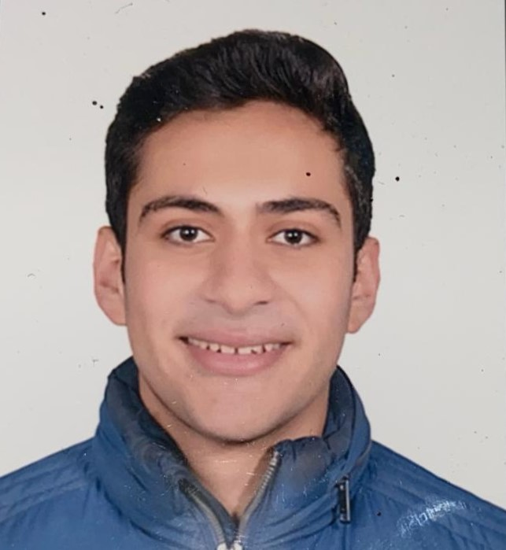

<!DOCTYPE html>
<html lang="en">
<head>
    <meta charset="UTF-8">
    <meta name="viewport" content="width=device-width, initial-scale=1.0">
    <title>My Resume</title>
</head>
<body>
    <h1>MOHAMED WAEL MOHAMED KANDIL</h1>
    
    <hr />
    <h2>CAREER OBJECTIVE</h2>
    <p>A hard worker, engineering student can take all the activities and 
        responsibilities to improve my knowledge and having a new experience and 
        teamwork hoping one day to achieve a high position as I see my personality 
        convenient and my skills.
    </p>
    <hr />
    <h2>PERSONAL ATTRIBUTES</h2>
    <ul>
        <li>Fluent in English, Arabic and very Good French</li>
        <li>Computer Literate – Extremely conversant with various programs</li>
        <li>Excellent written and verbal communication skills.</li>
    </ul>
    <hr />
    <h2>EDUCATIONAL BACKGROUND</h2>
    <p>Faculty of Engineering, Alexandria University, ComputerCommunication Department (2020-Still).<br />
        Completed the third Semester with an accumulative GPA: 3.31<br />
        Graduated from Alexandria Language School (ALS).<br />
        Ranking the second position at Science Department
    </p>
    <hr />
    <a href="./public/about.html"><h3>MORE ABOUT ME</h3></a>
    <footer>
        <h3>@copyrights Mohamed Wael CV</h3>
    </footer>
</body>
</html>